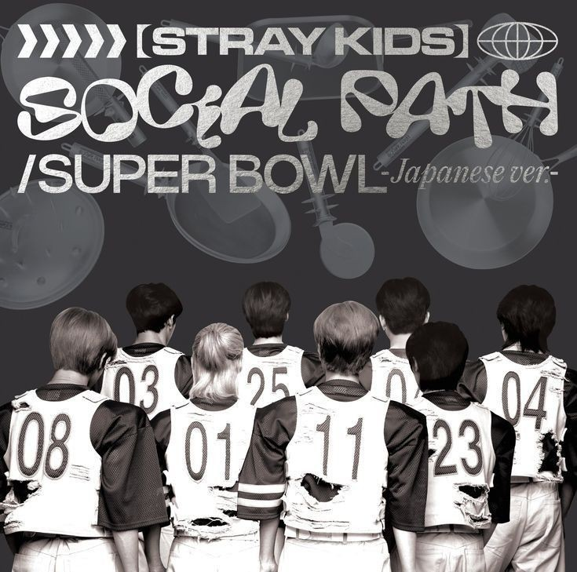

LYRIC ANALYSIS FILE
Social Path (feat. LiSA)
Stray Kids
- ALBUM
- Social Path / Super Bowl -Japanese ver.-
- RELEASE
- 2023.09.06
- UPDATED
- 2026.08.26
- LANGUAGE
- KOREAN / ENGLISH
- LYRICS
- BANG CHAN, CHANGBIN, HAN, YOHEI
- COMPOSED
- BANG CHAN, CHANGBIN, HAN, VERSACHOI
02 / MEMBER IDENTIFICATION
Part Colors
03 / LYRIC DATABASE
Lyrics
ゲイヴ アップ ゲイヴ アップ マイ ユース マイ ユース
Gave up Gave up my youth my youth
Gave up Gave up my youth my youth
フォー マイ フォー マイ フューチャー フューチャー
For my For my future future
For my For my future future
アイ ジャスト アイ ジャスト ウォント トゥ ウォント トゥ
I just I just want to want to
I just I just want to want to
ライズ アップ ライズ アップ ストロンガー ストロンガー
Rise up Rise up stronger stronger
Rise up Rise up stronger stronger
ホエア アム アイ ライト ナウ？ （ナウ ナウ ナウ ナウ）
Where am I right now? (Now Now Now Now)
Where am I right now? (Now Now Now Now)
くち おぷとん きん ぱむ （ナイト ナイト ナイト ナイト）
끝이 없던 긴 밤 (Night Night Night Night)
終わらない Night
なり ぱるが おんだ たうみ たがおんだ
날이 밝아 온다 다음이 다가온다
日が昇れ ば 明日が来る さ
アイ ウォント ミス イット
I won't miss it
I won't miss it
（ナウ オア ネヴァー）
(Now or Never)
(Now or Never)
まぬん こる ぽぎへっち たどぅる まらぬん ちょんちゅにらみょん
많은 걸 포기했지 다들 말하는 청춘이라면
諦めてた みんなが言う青春は
すまぬん ゆほぐる ちゃま ねっち
수많은 유혹을 참아 냈지
たくさん誘惑耐え抜いた
なる まんまなげ ぶぁったみょん
날 만만하게 봤다면
甘く見てたなら
ユア ロング
You're wrong
You're wrong
よんぐぁんろえ ぐぁんそく
용광로의 광석
溶鉱炉 Crystal
と たんだねじぬん くむそく
더 단단해지는 금속
強くなってく金属
なん と きょんごはげ くっこんはげ
난 더 견고하게 굳건하게
固さを増し 強固だね
たしん おぷする すんがね くちゅる ひゃんへ
다신 없을 순간의 끝을 향해
二度ない瞬間へ向かってんね
アイ ノウ イッツ ゴナ ビー ロンリー
I know it's gonna be lonely
I know it's gonna be lonely
コーズ エヴリワン キープス ターニング ミー ダウン
Cause everyone keeps turning me down
Cause everyone keeps turning me down
カウントレス ニュー サラウンディングス
Countless new surroundings
Countless new surroundings
コールド アイズ キープ ルッキング ミー ダウン
Cold eyes keep looking me down
Cold eyes keep looking me down
アイム スティル イン ザ クラウド、エイリアン オブ ザ タウン （ヘイ！ヘイ！ヘイ！）
I'm still in the crowd, alien of the town (Hey! Hey! Hey!)
I'm still in the crowd, alien of the town (Hey! Hey! Hey!)
イェ ゼイ ウォント ミー トゥ ギヴ アップ ライト ナウ （ヘイ！ヘイ！ヘイ！）
Yeah they want me to give up right now (Hey! Hey! Hey!)
Yeah they want me to give up right now (Hey! Hey! Hey!)
ゼア メイキング ミー ラフ イッツ ソー ラウド （ヘイ！ヘイ！ヘイ！）
They're making me laugh it's so loud (Hey! Hey! Hey!)
They're making me laugh it's so loud (Hey! Hey! Hey!)
ウェイキング ザ デーモン ザッツ ハイディング インサイド （ヘイ！ヘイ！ヘイ！）
Waking the demon that's hiding inside (Hey! Hey! Hey!)
Waking the demon that's hiding inside (Hey! Hey! Hey!)
（ワン ツー スリー フォー）
(one two three four)
(one two three four)
ユー オンリー ゲット トゥ リヴ ワン ライフ アイ ノウ アイム レディ
You only get to live one life I know I'm ready
You only get to live one life I know I'm ready
テイク ザット チャンス ノー マター ワット ゼイ テル ミー
Take that chance no matter what they tell me
Take that chance no matter what they tell me
アイ キャノット エクスプレイン ディス フィーリング
I can not explain this feeling
I can not explain this feeling
イェ ディス パス ワズ メント トゥ ビー マイ ドリーム
Yeah this path was meant to be my dream
Yeah this path was meant to be my dream
ルック バック、ジ アッシズ プルーヴ マイ
Look back, the ashes prove my
Look back, the ashes prove my
パッション オールウェイズ バーンズ エターナリー
Passion always burns eternally
Passion always burns eternally
ノー リグレッツ、アイ ラヴ ディス フィーリング
No regrets, I love this feeling
No regrets, I love this feeling
ダウン オン ディス ロード、コール イット ザ ソーシャル パス
Down on this road, call it the Social Path
Down on this road, call it the Social Path
アイム トッシング ターニング イン マイ ベッド
I'm tossing turning in my bed
I'm tossing turning in my bed
ゼム ヴォイシズ イン マイ ヘッド アゲイン
Them voices in my head again
Them voices in my head again
アイ ガタ シェイク エム オフ ナウ
I gotta shake em off now
I gotta shake em off now
（ナウ オア ネヴァー）
(Now or Never)
(Now or Never)
ネヴァー ニュー
Never knew
Never knew
アイド シー ソー メニー ピープル カム アンド ゴー
I'd see so many people come and go
I'd see so many people come and go
アイ シー ザ ミラー、イッツ オンリー ミー
I see the mirror, it's only me
I see the mirror, it's only me
イーヴル ソーツ テイキング オーヴァー、アイマ レット イット ゴー
Evil thoughts taking over, Imma let it go
Evil thoughts taking over, Imma let it go
アイ ファイト マイセルフ、イッツ オンリー ミー
I fight myself, it's only me
I fight myself, it's only me
アイ ノウ イッツ ゴン ビー ロンリー
I know it's gon be lonely
I know it's gon be lonely
コーズ エヴリワン キープス ターニング ミー ダウン
Cause everyone keeps turning me down
Cause everyone keeps turning me down
カウントレス ニュー サラウンディングス
Countless new surroundings
Countless new surroundings
コールド アイズ キープ ルッキング ミー ダウン
Cold eyes keep looking me down
Cold eyes keep looking me down
アイム スティル イン ザ クラウド、エイリアン オブ ザ タウン
I'm still in the crowd, alien of the town
I'm still in the crowd, alien of the town
イェ ゼイ ウォント ミー トゥ ギヴ アップ ライト ナウ
Yeah they want me to give up right now
Yeah they want me to give up right now
ゼア メイキング ミー ラフ イッツ ソー ラウド
They're making me laugh it's so loud
They're making me laugh it's so loud
ウェイキング ザ デーモン ザッツ ハイディング インサイド （ワン ツー スリー フォー）
Waking the demon that's hiding inside (one two three four)
Waking the demon that's hiding inside (one two three four)
ユー オンリー ゲット トゥ リヴ ワン ライフ アイ ノウ アイム レディ
You only get to live one life I know I'm ready
You only get to live one life I know I'm ready
テイク ザット チャンス ノー マター ワット ゼイ テル ミー （ヘイ！ヘイ！ヘイ！ヘイ！）
Take that chance no matter what they tell me (Hey! Hey! Hey! Hey!)
Take that chance no matter what they tell me (Hey! Hey! Hey! Hey!)
アイ キャノット エクスプレイン ディス フィーリング （ヘイ！ヘイ！ヘイ！ヘイ！）
I can not explain this feeling (Hey! Hey! Hey! Hey!)
I can not explain this feeling (Hey! Hey! Hey! Hey!)
イェ ディス パス ワズ メント トゥ ビー マイ ドリーム （ヘイ！ヘイ！ヘイ！ヘイ！）
Yeah this path was meant to be my dream (Hey! Hey! Hey! Hey!)
Yeah this path was meant to be my dream (Hey! Hey! Hey! Hey!)
ルック バック、ジ アッシズ プルーヴ マイ
Look back, the ashes prove my
Look back, the ashes prove my
パッション オールウェイズ バーンズ エターナリー
Passion always burns eternally
Passion always burns eternally
ノー リグレッツ、アイ ラヴ ディス フィーリング
No regrets, I love this feeling
No regrets, I love this feeling
ダウン オン ディス ロード、コール イット ザ ソーシャル パス
Down on this road, call it the Social Path
Down on this road, call it the Social Path
ノー ウェイ バック トゥ ザ パスト
No way back to the past
No way back to the past
アイル ステップ アヘッド
I'll step ahead
I'll step ahead
ゴー ライト イン フロント オブ ミー
Go right in front of me
Go right in front of me
ちっきん ちょんさじぬる たし ぷちょ なる みろねど
찢긴 청사진을 다시 붙여 날 밀어내도
破れた地図繋ぎ 押し出されても
うぉるれ くれっとん でろ ちょ うぃるる たるりご
원래 그랬던 대로 저 위를 달리고
昔みたいに 上を走る
なる そ いんぬん ごせ めんもむろ まっそ
날 서 있는 곳에 맨몸으로 맞서
険しい場所 一人で
ぱみ と わど アイ ウィル ライズ アップ
밤이 또 와도 I will rise up
夜と向き合い I will rise up
ゲイヴ アップ ゲイヴ アップ マイ ユース マイ ユース
Gave up Gave up my youth my youth
Gave up Gave up my youth my youth
フォー マイ フォー マイ フューチャー フューチャー
For my For my future future
For my For my future future
アイ ジャスト アイ ジャスト ウォント トゥ ウォント トゥ
I just I just want to want to
I just I just want to want to
ライズ アップ ライズ アップ ストロンガー ストロンガー
Rise up Rise up stronger stronger
Rise up Rise up stronger stronger
アイム ゴナ ルック バック、ジ アッシズ プルーヴ マイ
I'm gonna look back, the ashes prove my
I'm gonna look back, the ashes prove my
パッション オールウェイズ バーンズ エターナリー
Passion always burns eternally
Passion always burns eternally
ノー リグレッツ、アイ ラヴ ディス フィーリング
No regrets, I love this feeling
No regrets, I love this feeling
ダウン オン ディス ロード
Down on this road
Down on this road
コール イット ザ ソーシャル パス
Call it the Social Path
Call it the Social Path